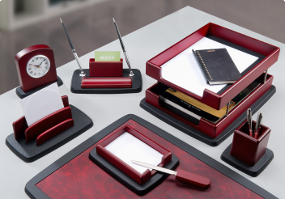
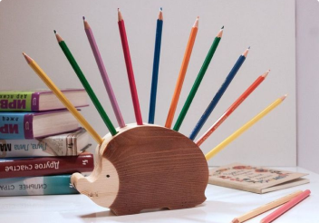
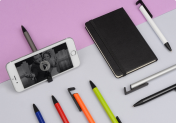

Офис любой компании невозможно представить без канцелярских принадлежностей. С одной стороны, офисная канцелярия — это стиль и...
12.03.2020
Где только не предлагают хранить пишущие принадлежности пытливые умы современных дизайнеров: в баках для мусора, гигантских...
05.03.2020
В современном мире писать «от руки» человеку приходится все реже. Но приходится. Предлагаю совместить приятное с полезным! Хорошую...
27.02.2020Офис любой компании невозможно представить без канцелярских принадлежностей. С одной стороны, офисная канцелярия — это стиль и...
12.03.2020Где только не предлагают хранить пишущие принадлежности пытливые умы современных дизайнеров: в баках для мусора, гигантских...
05.03.2020В современном мире писать «от руки» человеку приходится все реже. Но приходится. Предлагаю совместить приятное с полезным! Хорошую...
27.02.2020